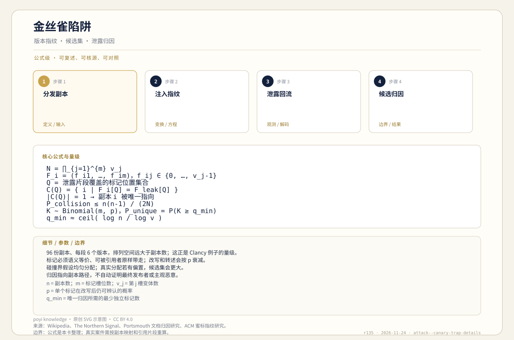
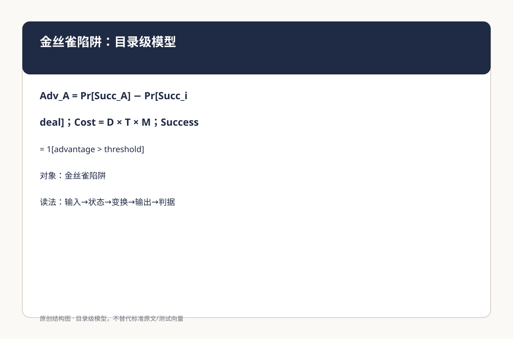

原理与机制
攻击：金丝雀陷阱（Canary Trap）。金丝雀陷阱的核心不是加密，而是分发侧的指纹化：同一份敏感文本准备多个语义等价、措辞或细节略有差异的版本，给每个可能接触者不同组合，并把“版本—持有人”映射秘密保存。泄露文本回流后，只比较被引用的少量片段，就能把候选范围从“所有持有人”缩到具体副本。形式化：设 m 个可替换位置，第 j 位有 v_j 个变体；总变体空间 N=∏v_j。副本 i 的指纹是 F_i=(f_i1,…,f_im)。泄露片段覆盖位置集合 Q，候选集 C(Q)={i | F_i[Q]=F_leak[Q]}；当 |C(Q)|=1 时完成归因。若各位置等概率分配，n 个副本发生碰撞的概率可用生日界 P_collision≤n(n-1)/(2N) 估算。实际泄露者会改写、摘录或转述。设每个标记位置在改写后仍可辨认的概率为 p，则可见位置数 K~Binomial(m,p)；要唯一归因，至少需要 q_min≈ceil(log n/log v) 个独立位置，成功率 P_unique=P(K≥q_min)。这就是“标记要多、但要自然”的量化理由。

为什么重要
传统访问控制只能降低泄露概率，不能回答“是谁”。金丝雀陷阱把调查从开放集变成有限候选集，且不依赖抓现行；它提供的是归因证据，不是预防。对泄密调查、董事会文件、并购材料和记者线人等场景，价值在于把“所有人都可能”变成“这份副本只给过谁”。但它不是密码学证明：如果副本被复印、转发、多人共读，指纹仍指向原始副本持有人，而不是实际转发者。它只能证明副本路径，不能证明主观恶意。
应用与实例
操作步骤：1）划定可能接触者与副本数量 n；2）选 m 个不影响语义的槽位（日期、代号、金额尾数、无关形容词）；3）给每副本分配唯一指纹，记录映射；4）让版本看起来同等可信；5）泄露发生后收集引用片段，按 Q 比对候选集；6）若候选不唯一，追加槽位或缩小分发范围。数字版本可用文档水印、不可见字符、不同链接/收件人、蜜标文件。关键是标记要能被引用者原样带走，且不改变业务含义。

边界与攻击面
失效条件：改写或转述抹掉标记；副本被拍照、OCR、重新排版；多人共享同一副本；n 大于 N 导致碰撞；标记太显眼被识别后清除；法律或伦理上不得设置误导性内容或诱导犯罪。金丝雀陷阱也不能证明谁最终对外发布。
历史与背景
该技术情报界长期使用，有时称 barium meal test；Tom Clancy 1987 年小说让 canary trap 一词流行，书中描述每段摘要六个版本、96 份副本、超过一千种排列。数字时代出现文档指纹、水印和蜜标；2020 年代研究用生物特征与局部敏感哈希把文档与最后接触者关联，在删除 100 词等修改下平均成功率 89.31%，说明“文档本身作为证据”的思路仍在演进。
技术参数与复算边界
该条目的形式模型是 (\mathrm{Adv}^{\mathrm{attack}}_A(\lambda)=\Pr[\mathrm{Game}_A(\lambda)=1]-\frac12)。输入：输入：金丝雀陷阱的公开参数、密钥/随机数与消息；变量说明：λ 安全参数；Game 把攻击目标写成挑战-响应游戏。 预期输出：按 金丝雀陷阱 的规范执行后得到可验证的输出或可比较的优势界。 复算必须给出输入、步骤、输出和单位；示例只演示流程，不替代标准测试向量。
复杂度由密钥长度、分组/状态规模、轮数、随机数质量和敌手模型共同决定；参数越界、版本差异与实现侧信道都可能使公式结论失效。已登记限制：该条目只给出形式模型与可复算步骤，不声称已完成生产实现、侧信道认证或第三方安全评估。
参数与状态规模
公式 (\mathrm{Adv}^{\mathrm{attack}}_A(\lambda)=\Pr[\mathrm{Game}_A(\lambda)=1]-\frac12) 的输入、输出和单位必须逐项登记；复算顺序为：1. 定义挑战与获胜条件 2. 给攻击者 oracle 访问 3. 计算优势并与目标界比较。
状态规模、密钥长度、分组长度和轮数决定复杂度；这些量不能从标题推断，必须以标准或实现文档为准。
逐步示例与核验
形式模型与复算步骤
[\mathrm{Adv}^{\mathrm{attack}}_A(\lambda)=\Pr[\mathrm{Game}_A(\lambda)=1]-\frac12]
金丝雀陷阱的公开参数、密钥/随机数与消息；变量说明：λ 安全参数；Game 把攻击目标写成挑战-响应游戏。1.定义挑战与获胜条件。2.给攻击者 oracle 访问。3.计算优势并与目标界比较。边界：公式只覆盖已登记的参数与假设；参数取值、标准版本和实现细节仍以来源为准。
参考出处
- Wikipedia search entry for 金丝雀陷阱. https://zh.wikipedia.org/w/index.php?search=%E9%87%91%E4%B8%9D%E9%9B%80%E9%99%B7%E9%98%B1
- Handbook of Applied Cryptography (Menezes, van Oorschot, Vanstone). https://www.cacr.math.uwaterloo.ca/hac/